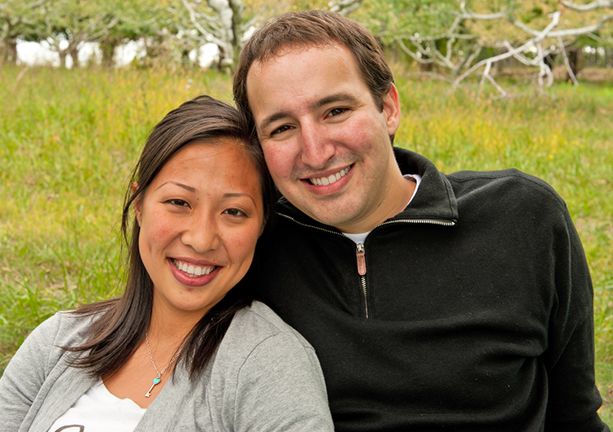

About
Set in the beautiful Scottish Highland Town of Oban, Thistle Guest House has welcomed visitors to Oban for the past 20 years.
It is the ideal base from which to explore Scotland’s west coast. Convenient for the train and ferry terminals it is ideal for both leisure and business guests. Our spacious sun lounge offers a panoramic view of the bay, the island of Kerrera and the mountains of Mull. The modern bedrooms and luxurious suites are appointed to a very high standard and many have glorious sea views.
Enjoy the seclusion of our quiet location on the south shore of the harbour, a few minutes’ walk from the town square. Select from rooms with stunning views across Oban Bay to Lismore, the Morvern Peninsula and Mull or choose a quiet room overlooking our rear garden. If you are looking for exceptional quality accommodation for your special stay, we know you will be pleased.
Are you looking for the perfect luxurious weekend getaway? Or a peaceful and exquisite place to stay on your trip to/from the Highlands or Islands. Then look no further than The Thistle Guest House.
Set on the edge of Oban’s picturesque Esplanade in the heart of Argyll, the Thistle Guest House is the ideal base from which to explore Scotland’s West Coast. Convenient to the train and ferry terminals, it is ideal for both leisure and business guests to become immersed into the Scottish Highlands.
The Thistle Guest House is open all year round and offers accommodation from 4 bedrooms and has been awarded three stars and a rosette with the AA.
Sophie and Linus hope guests will enjoy the peace, stunning scenery, abundant wildlife, our beautiful wild flowers and ancient heritage including duns and castles. We are happy to advise you on local places of interest and to help you really obtain the greatest benefit from your stay.
